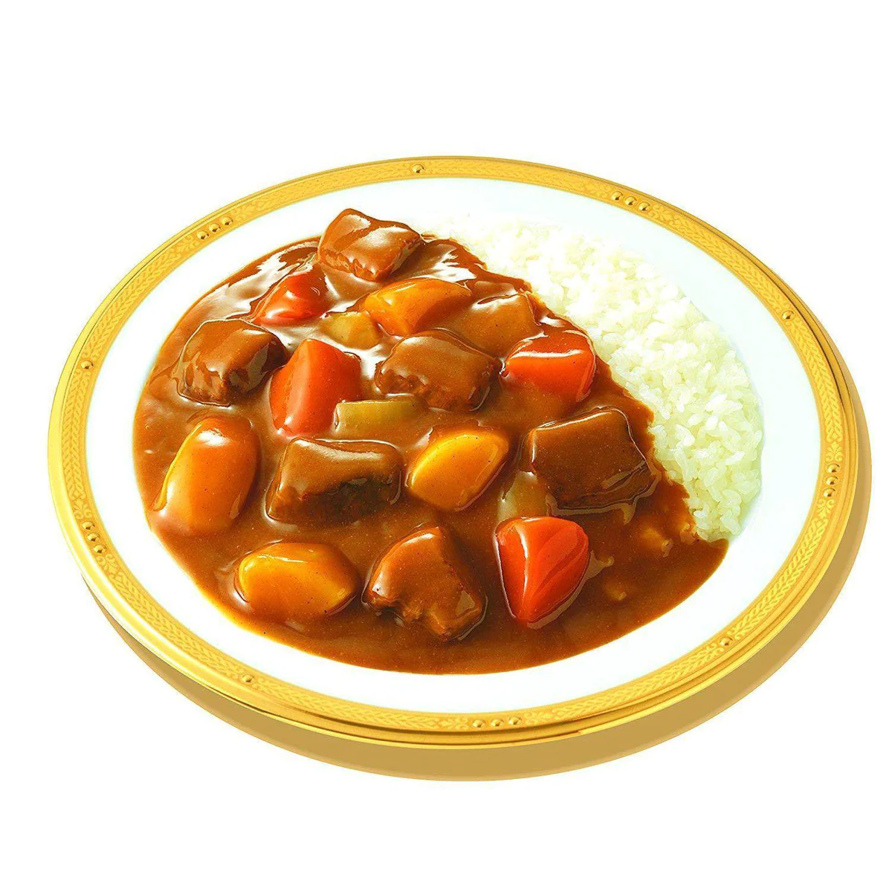

Japanese Curry

Description
A simple quick big pot meal to make for when my teeth hurt from braces.
Ingredients
- 2 onions
- 1 or 2 carrots
- 4 cups beef/chicken stock
- 1 block Java roux
- 1 block Kokumaro roux
- Avocado oil
- Optional: milk and meat
- Rice to serve
Steps
- Dice onions and carrots
- Oil the pot and caramelize the onions
- Stir fry carrots and meat
- Add in broth and wait to boil
- Add in curry roux and simmer for 20 minutes
- Add in milk and water to taste